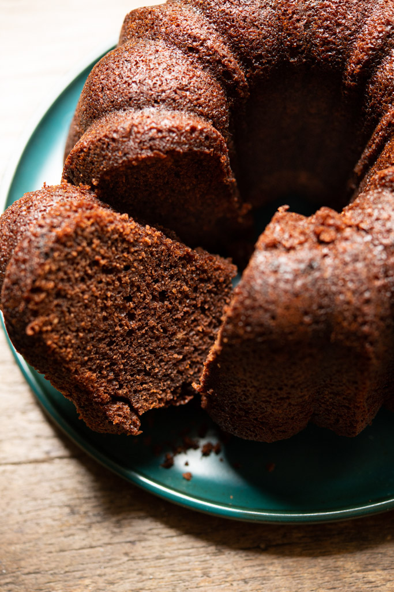

Bolo de Chocolate
Ingredientes
- 3 ovos
- 1 xícara (chá) de açúcar
- 1/2 xícara (chá) de óleo (pode ser de soja, milho ou canola)
- 1 xícara (chá) de chocolate em pó ou achocolatado
- 2 xícaras (chá) de farinha de trigo
- 1 xícara (chá) de leite morno ou água fervente (deixa a massa super úmida)
- 1 colher (sopa) de fermento em pó
Modo de Preparo
Massa
- Em um liquidificador, bata os ovos, o açúcar, o óleo, o achocolatado e a farinha de trigo. Importante: caso seu liquidificador não seja muito potente, coloque a farinha aos poucos conforme bate e, quando a massa ficar mais densa, passe para uma tigela e misture o restante da farinha com um fouet.
- Despeje a massa em uma tigela e adicione a água quente, o sal e o fermento, misturando bem.
- Despeje a massa em uma forma untada e asse em forno médio-alto (200° C), preaquecido, por 40 minutos.
- Desenforme ainda quente
